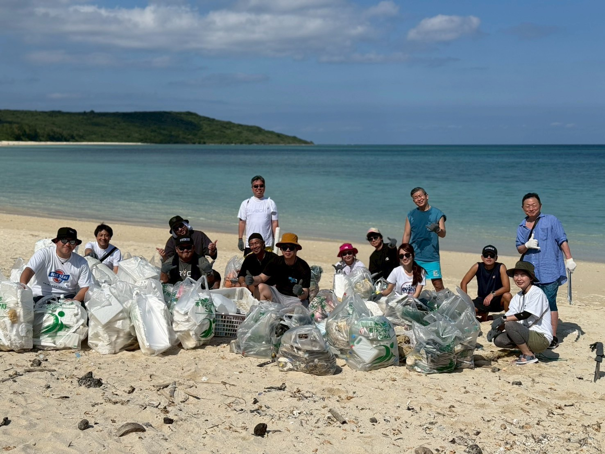
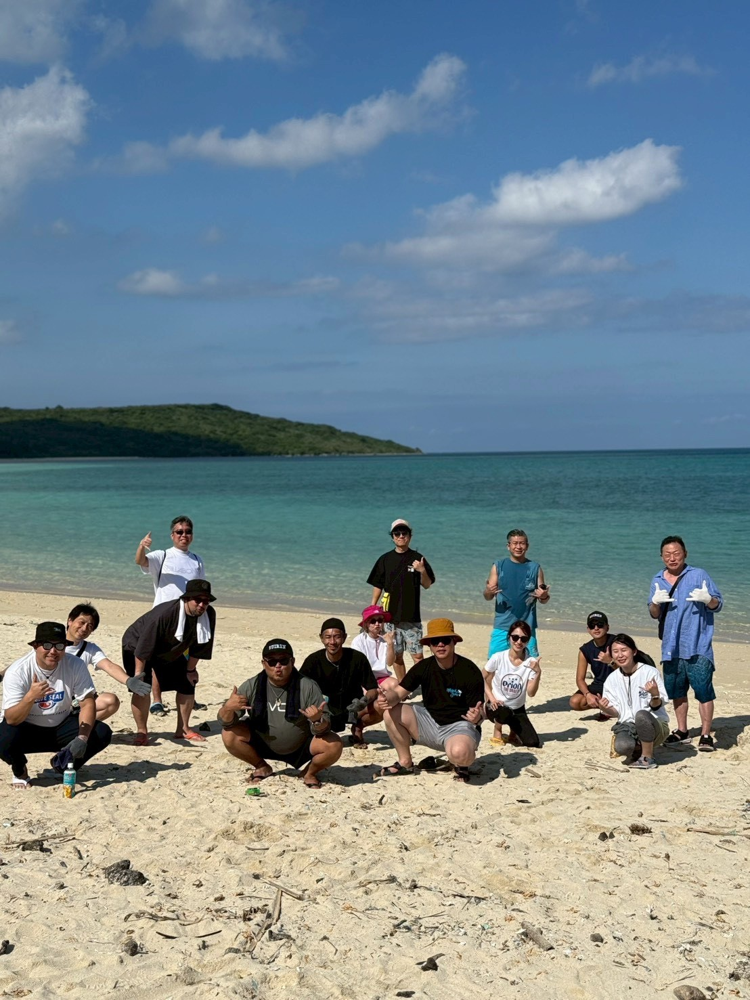

GENERAL INCORPORATED ASSOCIATION YUINCHU
宮古島の美しい海と文化。人とのつながりを次の世代へ。
宮古島の美しい海、文化、人のつながりを次の世代へつないでいきたい。
世界を代表するビーチリゾート宮古島。海は「宮古ブルー」といわれるほど美しく、この海で生きるウミガメやサンゴをはじめ、この地で生きる動植物、育まれてきた文化や人の営みは、宮古島の豊かな自然があったからこそ存在しています。
私たち一般社団法人 結人は、この美しく豊かな宮古島に魅了され、次の世代へとつないでいきたいと思っています。
人と人を結び、信頼を築き、経営者としての行動力と想いで新しい価値を生み出していく。この挑戦は、自分たちの利益だけではなく、この島の豊かさを未来へとつないでいくためにあります。
仲間と共に考え、共に学び、共に行動する。この島で暮らし、この島に関わる人とのつながりを大切にしながら、地域と共に歩み、未来を創り続けていきます。
運営法人について持続可能な宮古島にするために、
3つの視点から行動する。
-
Economy
経済的活動
地域との連携を通じて、持続可能な経済活動を実現することを目指しています。現地でのビジネスマッチングや文化体験を通じ、地域経済への貢献と事業成長の両立を図ります。
-
Social
社会的活動
地域行事への参加や地元企業との交流を通じて、地域社会とのつながりを大切にしています。文化継承や人とのつながりを育み、持続可能な社会づくりに貢献します。
-
Environment
環境的活動
自然環境を大切にする意識を共有し、宮古島の美しい自然を守る活動に取り組んでいます。ビーチクリーンなどの行動を通じ、海洋環境を守ります。
宮古ブルーの美しさを、砂浜から未来へつなぐ。
一般社団法人 結人は、砂浜のゴミを拾い、片付けるビーチクリーン活動を続けています。
宮古ブルーの美しさを保つために、ウミガメが産卵する砂浜を未来につなげるために。拾ったゴミは集め、自治体に回収してもらっています。
ビーチクリーンの後には懇親会を行うこともあり、地域の課題やさらにできること、チャンスはないかを話し合い、次の行動へつなげています。
詳しくはこちら



地域と共に
価値を創る。
実践の場を
つくる。
意思決定権を持つ経営者や地域事業者が集うことで、理念に対してスピード感を持って実行に移します。単なる交流ではなく、地域と共に価値を創る実践を目的としています。
- 地域企業との対話
- 現地企業との直接の対話を通じて、地域課題の理解や協業の可能性を広げます。
- 文化・行事への参加
- 宮古島の文化や風習に触れる機会をつくり、地域への理解を深めます。
- 事業共有と実行
- 互いの取り組みを共有し、情報交換にとどまらない具体的な連携へつなげます。
宮古島の資源から、新たな事業と商品を生み出す。
宮古島には豊かな自然、美しい海と風土から生まれた農作物や商品が様々あります。ビジネスマッチングを通して新たなプロダクトを生み出すこと。新規事業や新たなサービスを構築していく予定です。
一般社団法人 結人
宮古島の自然、文化、人の営みを未来へつなぐために、環境保全活動、地域連携、事業共創に取り組んでいます。
- 法人名
- 一般社団法人 結人
- 所在地
- 〒906-0013
沖縄県宮古島市平良下里545-2 与古田ハイツ103
お問い合わせ ご相談・協業・取材
美しき、宮古島。